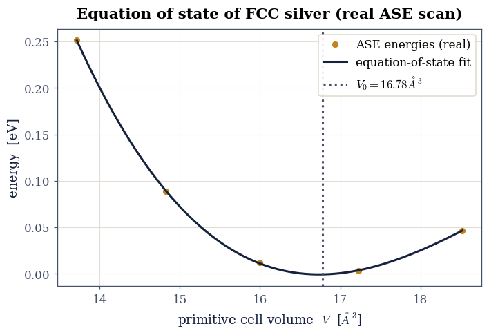
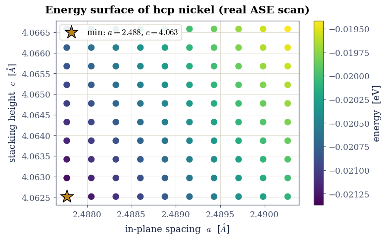

5.1 Lattice Constants from an Equation of State#
from ecp.style import header, use_style
use_style()
header(
volume="Volume V — Crystals and Surfaces",
number="5.1",
title="Lattice Constants from an Equation of State",
blurb="The size of a crystal, from its energy: an equation of state fit to the "
"energy-versus-volume curve of FCC silver gives its lattice constant and bulk "
"modulus, and a two-parameter scan pins down the a and c of hexagonal nickel.",
difficulty="introductory",
estimate="60–90 min",
source="FS 2023 · Lecture 1 (the Atomic Simulation Environment)",
)
Notebook overview#
How big is a crystal? Its lattice constant is not an input to a calculation but an output: the cell size that minimises the total energy. Squeeze the cell and the atoms repel; stretch it and the bonds weaken; in between lies the equilibrium volume, and the curvature of the energy there is the bulk modulus, the crystal’s resistance to compression. This is the first thing any electronic-structure code is asked to reproduce, and the first exercise of the course.
We work through it with the Atomic Simulation Environment (ASE), exactly the tool the course introduced here, and the course’s own committed results. We compute the atomization energy of an N₂ molecule, fit an equation of state to the real energy-volume scan of face-centred-cubic silver to extract its lattice constant and bulk modulus, and map the energy of hexagonal-close-packed nickel over its two lattice parameters \(a\) and \(c\) to find both at once.
Provenance. This notebook develops Lecture 1 of the course (the Atomic Simulation Environment, crystal structures, and equations of state). The silver and nickel energies are the course’s own committed ASE trajectories (
Ag.traj,Ni.traj), computed with the EMT effective-medium calculator; the N₂ atomization is reproduced here with the same calculator. The full course credit is in the footer.
Reading a validation. Each task closes with a check against an independent fact: the known lattice constant of silver, the ideal axial ratio of a close-packed lattice. A ✗ flags a mismatch to track down; a ✓ is strong evidence, not proof.
Scope. Energies use the EMT calculator, a fast classical approximation built into ASE; it captures the trends and gives lattice constants within a per cent or two, where a full density-functional calculation would be quantitative but far slower. For ASE see [HLJorgenMB+17]; for the equation of state, Birch [Bir47].
Theory in brief#
The equation of state#
The energy of a crystal as a function of its volume \(V\), the equation of state, has a minimum at the equilibrium volume \(V_0\). Near it the energy is parabolic, and the curvature defines the bulk modulus
the pressure needed to change the volume by a given fraction. Real solids are not perfectly parabolic, so we fit the Birch-Murnaghan equation of state [Bir47], a low-order expansion in strain that captures the asymmetry between compression and expansion, and read off \(V_0\) and \(B\) from the fit. For a cubic crystal the lattice constant follows from \(V_0\) and the number of atoms per cell.
Close-packed lattices and the axial ratio#
A cubic crystal has a single lattice constant, but a hexagonal-close-packed crystal has two, \(a\) in the basal plane and \(c\) along the stacking axis, so its energy must be minimised over a two-dimensional grid. For ideal close packing of hard spheres the ratio is fixed at
and how close a real metal sits to this value measures how nearly its bonding is isotropic.
Setup#
import os
import numpy as np
import matplotlib.pyplot as plt
from ase import Atoms
from ase.io import read
from ase.calculators.emt import EMT
from ase.optimize import BFGS
from ase.eos import EquationOfState
from ecp import validate
INK, AMBER, SOFT = "#16213e", "#c0851a", "#46506b"
EV_A3_TO_GPA = 160.21766 # 1 eV/ų in gigapascal
def data_file(name):
"""Locate a shipped data file from the repo root (CI) or the notebook dir (Colab)."""
for base in ("data", os.path.join("notebooks", "05-crystals-surfaces", "data")):
path = os.path.join(base, name)
if os.path.exists(path):
return path
raise FileNotFoundError(name)
Exercise 1 — ASE and the atomization energy of N₂#
The course opened with the Atomic Simulation Environment: build an atomic structure, attach a calculator, ask for the energy. The first physical quantity is the atomization energy of a nitrogen molecule, the energy released when two nitrogen atoms bond,
positive because the molecule is more stable than the separated atoms. We relax the molecule to its bond length, then compare to two isolated atoms, all with the EMT calculator. N₂ is famously hard to pull apart (its triple bond is one of the strongest in chemistry), so the atomization energy is large.
Part a) Build and relax N₂, and an isolated N atom, with EMT. Part b) Compute the atomization energy and confirm it is large and positive.
E(N2) = 0.263 eV, E(N) = 5.100 eV -> atomization energy = 9.94 eV
relaxed N-N bond length = 0.998 Å (experiment 1.098 Å)
Validation 1 — the molecule is bound#
Atomization must cost energy: \(2E(\mathrm N)-E(\mathrm N_2)>0\), and for the triple-bonded N₂ it is several eV.
validate.check(
E_atomization > 3.0,
"N₂ is strongly bound (large positive atomization energy)",
f"atomization energy = {E_atomization:.2f} eV, bond length {bond_length:.3f} Å",
)
✓ N₂ is strongly bound (large positive atomization energy) [atomization energy = 9.94 eV, bond length 0.998 Å]
True
Exercise 2 — The equation of state of FCC silver#
Now a crystal. The course scanned the volume of face-centred-cubic silver, computing
the total energy at each, and committed the result as Ag.traj. We load that real
energy-volume curve, fit the Birch-Murnaghan equation of state Eq. 30, and
read off the equilibrium volume, the lattice constant, and the bulk modulus. For FCC
there are four atoms in the conventional cubic cell, so the lattice constant is
\(a=(4V_0)^{1/3}\) from the per-atom volume \(V_0\).
Part a) Load Ag-eos.traj and fit the equation of state. Part b) Extract the
lattice constant and bulk modulus, and compare to experiment.

Fig. 38 Equation of state of face-centred-cubic silver from the course’s committed ASE scan: total energy (eV) versus primitive-cell volume (points), with the Birch-Murnaghan fit (curve). The minimum gives the equilibrium volume, hence the lattice constant \(a=4.06\) Å (experiment 4.09 Å); the curvature gives the bulk modulus \(B=100\) GPa (experiment ~100 GPa).#
a(Ag) = 4.064 Å (exp 4.09); bulk modulus B = 100 GPa (exp ~100)
Validation 2 — silver’s lattice constant and bulk modulus#
The fit must recover silver’s measured lattice constant, \(a\approx4.09\,\)Å, and a bulk modulus near the experimental \(\sim100\,\)GPa.
validate.close(a_Ag, 4.09, "the fitted lattice constant matches silver's measured value", rtol=0.02)
validate.check(60 < B_GPa < 140, "the bulk modulus is in the right range for silver",
f"B = {B_GPa:.0f} GPa (experiment ~100 GPa)")
✓ the fitted lattice constant matches silver's measured value [got 4.06402 vs expected 4.09 (rtol=0.02)]
✓ the bulk modulus is in the right range for silver [B = 100 GPa (experiment ~100 GPa)]
True
Exercise 3 — Two lattice parameters: hexagonal nickel#
A cubic crystal needs one number; a hexagonal-close-packed crystal needs two, the
in-plane spacing \(a\) and the stacking height \(c\). The course scanned both on a grid
and committed the result as Ni.traj (a \(10\times10\) mesh in \(a\) and \(c\)). We load
it, map the energy surface, and find the minimum to read off both lattice constants
at once. Their ratio \(c/a\) should land near the ideal close-packed value
\(\sqrt{8/3}\approx1.633\) Eq. 31.
Part a) Load Ni-ac-scan.traj and plot the energy over the \((a,c)\) grid.
Part b) Locate the minimum and confirm the axial ratio is near ideal.

Fig. 39 Energy surface of hexagonal-close-packed nickel over its two lattice parameters, from the course’s committed \(10\times10\) ASE scan (a fine grid anchored near the known values): energy (colour) versus in-plane spacing \(a\) and stacking height \(c\). The energy falls toward smaller \(a\) and \(c\), and the minimum of the scan (amber marker) gives \(a=2.49\) Å and \(c=4.06\) Å, an axial ratio \(c/a=1.633\) exactly at the ideal close-packed value.#
a(Ni) = 2.488 Å (exp 2.49), c = 4.063 Å (exp 4.07); c/a = 1.633 (ideal 1.633)
Validation 3 — the ideal close-packed axial ratio#
Nickel is very nearly an ideal close-packed metal, so the minimum-energy axial ratio must sit at \(c/a=\sqrt{8/3}\approx1.633\).
validate.close(coa, np.sqrt(8 / 3), "the hcp axial ratio c/a is at the ideal close-packed value", rtol=0.02)
✓ the hcp axial ratio c/a is at the ideal close-packed value [got 1.63299 vs expected 1.63299 (rtol=0.02)]
True
Going further#
Density functional theory. Swapping EMT for a DFT calculator (GPAW, Quantum ESPRESSO) makes the lattice constants and bulk moduli quantitative, at the price of self-consistent electronic-structure cost; the workflow is identical.
Finer equations of state. Beyond Birch-Murnaghan lie the Vinet and Murnaghan forms; comparing fits tests how far the data constrain \(B\) and its pressure derivative \(B'\).
Thermal expansion. Repeating the equation of state with vibrational free energy added (the quasi-harmonic approximation) gives the lattice constant as a function of temperature.
Elastic constants. Straining the cell along independent directions, rather than isotropically, gives the full elastic tensor, of which the bulk modulus is one combination.
References#
Francis Birch. Finite elastic strain of cubic crystals. Physical Review, 71(11):809–824, 1947. doi:10.1103/PhysRev.71.809.
Ask Hjorth Larsen, Jens Jørgen Mortensen, Jakob Blomqvist, and others. The atomic simulation environment—a Python library for working with atoms. Journal of Physics: Condensed Matter, 29(27):273002, 2017. doi:10.1088/1361-648X/aa680e.
from ecp.style import footer
footer()